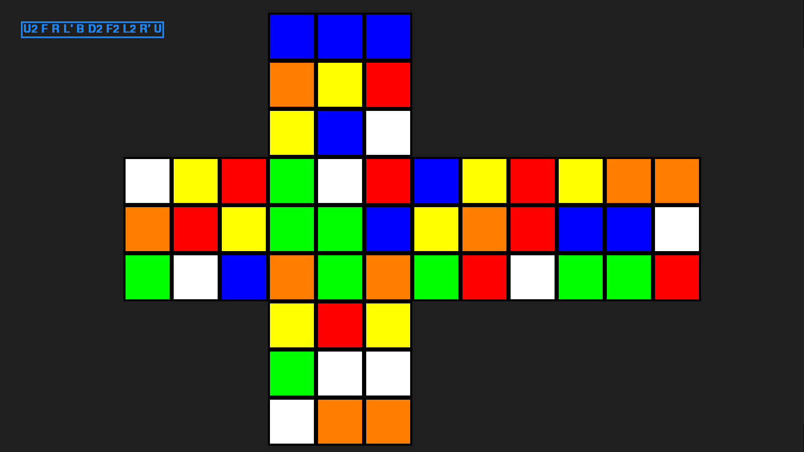

Rubik's Cube Solver Robot
Programmeren
Het programmeren van de robot is het lastigste deel van het project geweest. Het programmeren bestond voornamelijk uit drie hoofdonderdelen: Teensy programmeren, het algoritme om de kubus op te lossen en de GUI (Graphical User Interface) maken.
Bij het programmeren hebben we voornamelijk gebruik gemaakt van Python, maar ook een variant van C++ voor het programmeren van de Teensy met de Arduino IDE.
Teensy programmeren
Het programmeren van de Teensy was redelijk simpel. Het enige wat de Teensy hoefde te doen was inkomende data inlezen, en die uit voeren door de juiste motoren aan te sturen. De inkomende data zou de oplossing zijn die via USB binnenkomt vanaf de laptop.
Het algoritme
Het algoritme programmeren was niet gemakkelijk, maar wel heel interessant om te doen. Het omzetten van de algoritmes die wij zelf gebruiken, naar code voor een virtuele Rubik's Cube was hierbij de grootste uitdaging. Om dit te doen heb ik veel video's van mezelf gemaakt, terwijl ik een bepaald algoritme uitvoer. Dit, plus de stappen opschrijven op papier is een grote hulp geweest.
De GUI
Voor het maken van de interface hebben we gebruik gemaakt van de pygame-library. Hiermee konden we de status van de cube laten zien. Je kan in de interface een aantal moves invullen. De virtuele cube verandert dan zijn kleuren, waarna de moves ook naar de robot worden gestuurd. Zo is de echte cube gelijk aan de virtuele cube. Als er vervolgens op de spatiebalk wordt gedrukt, wordt de oplossing binnen ongeveer 20ms uitgevonden, en naar de robot verstuurd.
Het gemiddelde aantal moves ligt rond de 100.
Link naar de github: RubiksCubeSolver
Opname van de GUI
Voorbeeld van een ingevoerde hussel

C++

Python